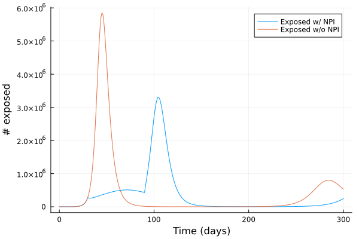
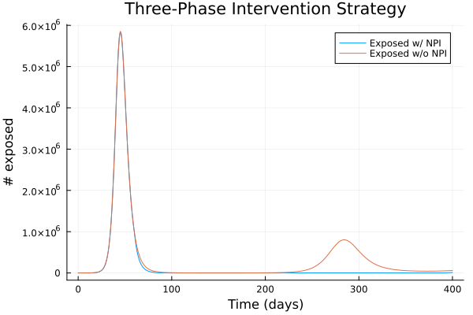

Time-dependent interventions
Time-based interventions are triggered at specific simulation times, not by epidemic state.
Single-Phase Example
using Daedalus
using Plots
# Simple lockdown: reduce transmission by 70% from day 30 to day 90
trigger_on = Daedalus.DaedalusStructs.TimeTrigger(30.0)
trigger_off = Daedalus.DaedalusStructs.TimeTrigger(90.0)
effect = Daedalus.DaedalusStructs.ParamEffect(
:beta, x -> x .* 0.3, x -> x ./ 0.3,
trigger_on, trigger_off
)
timed_npi = Daedalus.DaedalusStructs.Npi([effect])
data = daedalus("Australia", "sars-cov-2 delta", npi=timed_npi, time_end=300.0);
data_default = daedalus("Australia", "sars-cov-2 delta", time_end=300.0);
# plot exposed
exposed = Daedalus.Outputs.get_values(data, "E", 1)
exposed_default = Daedalus.Outputs.get_values(data_default, "E", 1)
times = Daedalus.Outputs.get_times(data)
plot(times, exposed, label="Exposed w/ NPI")
plot!(times, exposed_default, label = "Exposed w/o NPI")
xlabel!("Time (days)")
ylabel!("# exposed")
Multi-phased time-based NPI
Chain multiple intervention phases (e.g., lockdown → relaxation → second wave control):
using Daedalus
using Plots
# Define three intervention phases with different time windows
effects = [
Daedalus.DaedalusStructs.ParamEffect(
:beta, x -> x .* 0.3, x -> x ./ 0.3,
Daedalus.DaedalusStructs.TimeTrigger(60.0),
Daedalus.DaedalusStructs.TimeTrigger(120.0)
),
Daedalus.DaedalusStructs.ParamEffect(
:beta, x -> x .* 0.8, x -> x ./ 0.8,
Daedalus.DaedalusStructs.TimeTrigger(130.0),
Daedalus.DaedalusStructs.TimeTrigger(200.0)
),
Daedalus.DaedalusStructs.ParamEffect(
:beta, x -> x .* 0.5, x -> x ./ 0.5,
Daedalus.DaedalusStructs.TimeTrigger(210.0),
Daedalus.DaedalusStructs.TimeTrigger(365.0)
)
]
timed_npi = Daedalus.DaedalusStructs.Npi(effects)
data = daedalus("Australia", "sars-cov-2 delta", npi=timed_npi, time_end=400.0);
data_default = daedalus("Australia", "sars-cov-2 delta", time_end=400.0);
# Get exposed
exposed = Daedalus.Outputs.get_values(data, "E", 1)
exposed_default = Daedalus.Outputs.get_values(data_default, "E", 1)
times = Daedalus.Outputs.get_times(data)
plot(times, exposed, label="Exposed w/ NPI")
plot!(times, exposed_default, label="Exposed w/o NPI")
xlabel!("Time (days)")
ylabel!("# exposed")
title!("Three-Phase Intervention Strategy")